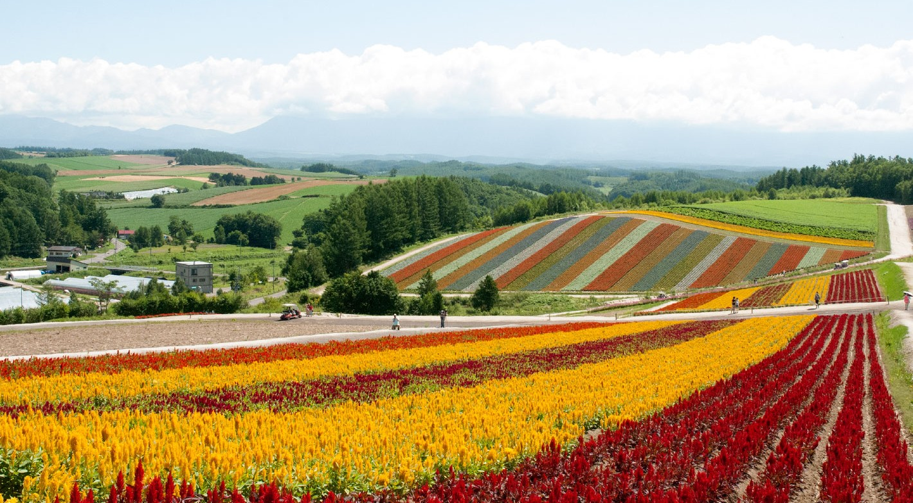
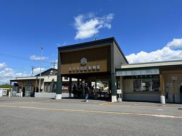
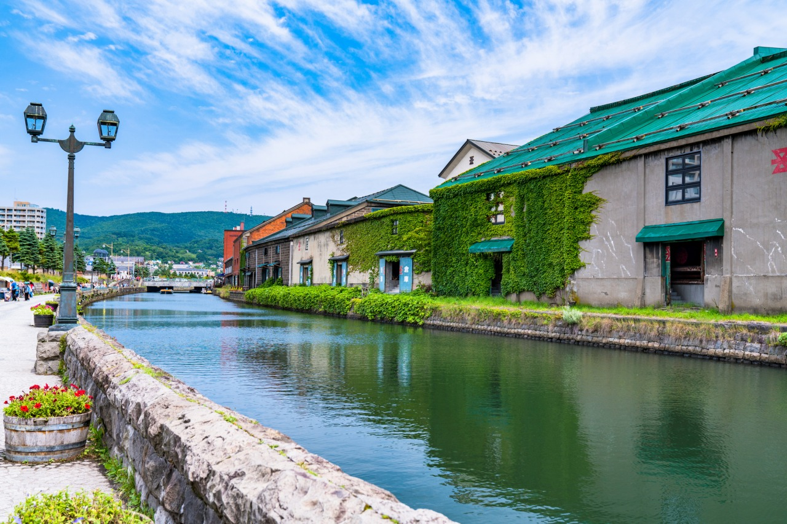
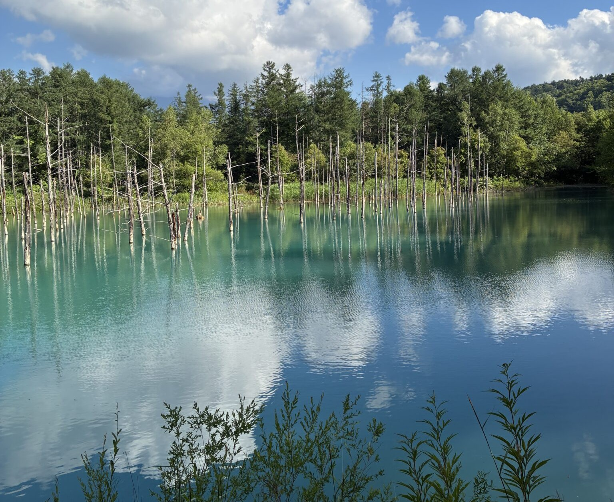
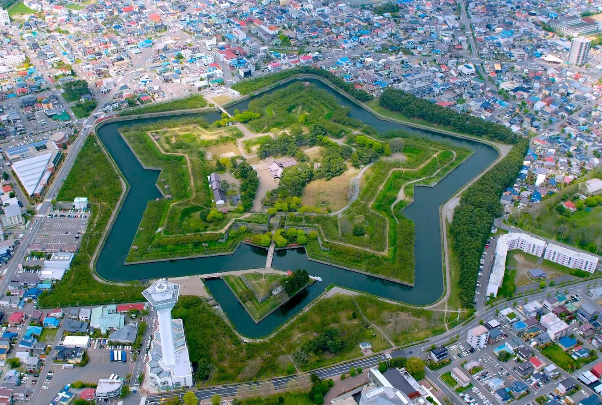

四季彩の丘は北海道美瑛町に広がる大規模な展望花畑で、丘陵地を生かした段階的な花壇が見渡せる観光ガーデンです。
春から秋にかけてラベンダー、ルピナス、コスモス、ひまわりなど季節ごとに異なる色彩の帯が丘を彩り、
十勝岳連峰を背景にしたパノラマ景観が特徴です。
面積は十数ヘクタール規模で、観光シーズンには観光バスや個人客が訪れる主要観光地となっています。

旭山動物園は北海道を代表する観光名所の1つです。
約100種類、約700点の動物たちと出会え、子どもから大人まで楽しめます。
動物たちがエサを食べる姿を見学できる「もぐもぐタイム」や、アザラシの泳ぎを観察できるマリンウェイ（円柱型の水槽）、
水に飛び込むホッキョクグマを見られる巨大プールなど、動物本来の動きが見られる行動展示が大きな魅力。

小樽運河は、歴史ある石造りの倉庫群とレトロな街並みが広がる、小樽を代表する観光スポットです。
石畳の道を歩けば、港町ならではの潮の香りがほのかに漂い、静かに流れる水の音が心地よく耳に届きます。
夕暮れ時になると、ガス灯の柔らかな火が一斉に灯り、一帯は幻想的なオレンジ色に包まれます。
さらに、新鮮な海鮮グルメを楽しめるため、多くの観光客で賑わいます。

北海道美瑛町・白金温泉近郊にある、青い池。
硫黄沢川や白ひげの滝から流れるアルミニウムを含んだ水と美瑛川が混ざり、太陽からの光も合わさった結果、水面が青く見えます。
見る角度や季節で表情変わり、夏の透き通った爽やかなブルーや、冬の雪と木々とのコントラストが美しい幻想的な風景に出会えます。
また、冬は青い池ライトアップも開催。一度は見たい絶景をぜひお楽しみください。

「五稜郭」は、江戸時代末期、函館に築造された星型の城郭。
五稜郭タワーでは、展望台から星型の五稜郭や函館市街、函館山を眺めることができ、
箱館奉行所では、蝦夷地の開拓や外交など当時の様子を見ることができます。
春には郭内一面に桜が広がり、冬にはライトアップイベント「五稜星の夢」（ほしのゆめ）が行われ、函館の冬に星型の光が灯ります。